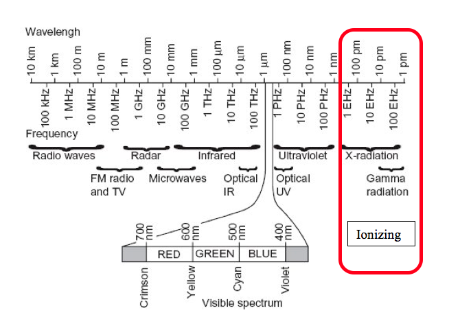
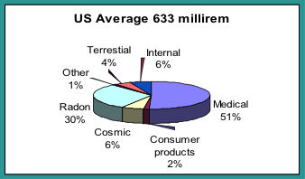
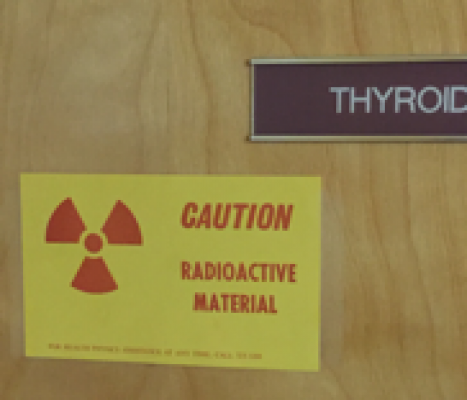
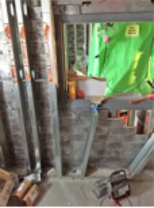
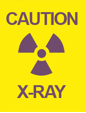

Last updated: May 13, 2026
Radiation Protection Guidance For Hospital Staff
The privilege to use ionizing radiation at Stanford University, Stanford Health Care, Lucile Packard Children’s Hospital and Veterans Affairs Palo Alto Health Care System requires each individual user to strictly adhere to federal and state regulations and local policy and procedures. All individuals who work with radioactive materials or radiation devices are responsible for knowing and adhering to applicable requirements. Failure of any individual to comply with requirements can jeopardize the investigation, the laboratory, and the institution.
This guidance document provides an orientation on ionizing radiation, and describes radiation safety procedures we have implemented to ensure a safe environment for our patients and students, the public, and ourselves. Our goal is to afford users as much flexibility as is safe and consistent with our policy of as low as reasonably achievable (ALARA) below the limits provided in the regulations.
The Radiation Safety Officer is responsible for managing the radiation safety program subject to the approval of the Administrative Panel on Radiological Safety, and is authorized to take whatever steps are necessary to control and mitigate hazards in emergency situations.
Consult with the Radiation Safety Officer at (650) 723-3201 for specific information.
Download full manual 1Introduction
2Introduction to Radiation Exposure
2.1Types of Radiation
Ionizing versus Nonionizing
Because health physics supports the uses of ionizing radiation it is helpful to discuss the reasons why this type of radiation is important. Not all radiation interacts with matter in the same way. Radiation that has enough energy to move atoms in a molecule around or cause them to vibrate, but not enough to remove electrons, is referred to as “non-ionizing radiation.” Examples of this kind of radiation are sound waves, visible light, and microwaves.
Radiation that falls within the “ionizing radiation” range has enough energy to remove tightly bound electrons from atoms, thus creating ions. This is the type of radiation that people usually think of as “radiation.” These properties are taken advantage of in diagnostic imaging and to kill cancer cells.
Examples of ionizing radiation uses are fluoroscopes, CT scanners and nuclear medicine bone scans. Examples of non-ionizing radiation exposures in the clinical setting include Magnetic resonance imaging (MRI), ultrasound and LASERS.
A wavelength graph is shown below.

Background Radiation
People are constantly exposed to small amounts of ionizing radiation from the environment as they carry out their normal daily activities; this is known as background radiation. We are also exposed through some medical treatments and through activities involving radioactive material.
Annual background radiation is often used as a “baseline” exposure to compare occupational exposures (or even diagnostic imaging exposures such as chest x-rays) to what we are naturally exposed to in our everyday environment.
Background radiation consists of the radiation exposures received from both natural and man-made sources. The unit of exposure or “dose” is often in mrems or mSvs (for more info see Stanford’s Radiation Safety Manual). For someone residing in the US, the annual background exposure is approximately 6.3 mSv (633 mrem), but some locations can be much higher.
The highest known level of background radiation in the world affecting a substantial population is in Kerala and the Madras States in India where some 140,000 people receive an annual exposure which averages over 30 mSv (3000 mrem) per year from both gamma and radon radiation (478% more than what is average in the US).
2.2Natural Sources of Radiation
We live in a radioactive world. There are many natural sources of radiation which have been present since the earth was formed. The three major sources of naturally occurring radiation are:
- Cosmic radiation
- Terrestrial radiation known as sources in the earth’s crust
- Internal sources or sources found in the human body
Cosmic Radiation
Cosmic radiation comes from the sun and outer space and consists of positively charged particles, as well as gamma radiation. At sea level, the average cosmic radiation dose is about 26 mrem per year. At higher elevations the amount of atmosphere that shields us from cosmic rays decreases and thus the dose increases. For instance, those that live in the “mile high” city of Denver have an annual cosmic radiation exposure of 50 mrem per year. The average dose in the United States is approximately 28 mrem per year.
Terrestrial
There are natural sources of radiation in the ground, rocks, building materials and drinking water. This is called terrestrial radiation. Some of the contributors to terrestrial sources are natural radium, uranium and thorium. Radon gas, which emits alpha particle radiation, comes from the decay of natural uranium in soil and is ubiquitous in the earth’s crust and is present in almost all rocks, soil and water. In the USA, the average effective whole body dose from radon is about 200 mrem per year. Nearly all rocks, minerals, and soil may contain small amounts of naturally occurring radioactive materials.
Internal
Our bodies also contain natural radionuclides. Potassium 40, crucial for life, is one example. The total average dose from natural internal sources of radiation is approximately 40 mrem per year.
2.3Human Sources of Radiation
The difference between man-made sources of radiation and naturally occurring sources is the location from which the radiation originates. The three major sources of human sources of radiation are:
- Medical sources
- Consumer products
- Atmospheric nuclear weapons testing
The following information briefly describes some examples of human-made radiation sources:
Medical Radiation Sources
The terms “x-ray” or “gamma ray” are sometimes used interchangeably however they are technically different. Even though x-rays are characteristically identical to gamma rays they are produced by a different mechanism. X-rays are produced by electrons outside of the nucleus; gamma rays are emitted by the nucleus. They are both an ionizing radiation hazard. A typical radiation dose from a two view chest x ray is about 0.2 mSv (20 mrem). A typical radiation dose from a whole body CT is about 15 mSv (1500 mrem). In addition to x-rays, radioactive isotopes are used in medicine for diagnosis and therapy.
Consumer Products
Examples include building products (contain naturally occurring radioactive materials) such as brick, granite counter tops, or phosphate fertilizer, tobacco products, and antiques such as clocks and watches (may contain radium or tritium so that the dial glows in the dark) or canary/vaseline glass. The radiation dose from consumer products is relatively small as compared to other naturally occurring sources of radiation and averages 0.1 mSv (10 mrem) per year.
Atmospheric Testing of Nuclear Weapons
Another man-made source of radiation includes residual fallout from atmospheric nuclear weapons testing that took place in the 1950’s and early 1960’s. Atmospheric testing is now banned by most nations. The average dose from residual fallout is about 0.02 mSv (2 mrem) in a year.
X-ray Machines
Any electronic device that has fast-moving electrons is a potential source of ionizing radiation. One example is a fluoroscope. An x-ray device was first used in 1896 and permitted non-invasive imaging of internal human structures. Today, in the US, medical procedures from ionizing radiation account for 51% of our average annual dose from radiation (the other 49% is from naturally occurring sources such as cosmic rays, radon, and soils).
X-rays
X-rays are a type of radiation commonly found in the hospital. These radiations are produced mainly by machines when high voltage electrons interact with matter. X-rays are a type of energy similar to light but like gamma rays pass easily through fairly thick materials. X-ray machines and the rooms they are used in have built-in shielding (for example lead or concrete) as needed. The useful beam is restricted by a cone or an adjustable collimator.
High Energy X-ray Machines and/or Accelerators
High energy x-ray machines, also called linear accelerators, which operate in the 4 MV to 25 MV energy range, are therapy machines used to treat primarily cancer.
Sealed Sources
Many devices use sealed radioactive sources because they provide a convenient, inexpensive source of ionizing radiation. Sealed radioactive sources are often made by encapsulating the salt or metal of a radionuclide into a welded metal container whose size typically ranges from smaller than a grain of rice to the size of a golf ball. The encapsulation ensures that there will be no dispersed radioactive contamination. Applications range from low activity alpha sources that are used in home smoke detectors to brachytherapy which is a form of radiotherapy where a radioactive source is placed inside or next to the area requiring treatment.

2.4Types of Radiation Emissions and their Decay
Gamma Radiation
Gamma radiation is similar to light and x-rays. This type of radiation is produced mainly by sealed sources or from nuclear medicine radiopharmaceuticals. Patients who have received large doses of radioactive materials that emit gamma rays may be a source of exposure to nurses and other personnel. For example, some therapy procedures use Iodine-131(131I) to treat thyroid cancer or Grave’s disease. 131I MIBG is used to treat neuroendocrine tumors.
Beta Radiation
Beta radiation is electrons with a range of energies. This type of radiation is less common in the medical setting because beta particles are far less penetrating than gammas, and generally will be stopped by about one-half of an inch wood, plastic, water, tissue…etc, depending on the energy.
Applications may include Yttrium 90 (90Y) for cases where it is not possible to surgically remove hepatic tumors. The 90Y is delivered by loading the yttrium into tiny resin microspheres. The spheres are injected via microcatheter into the common hepatic artery. A patient who has received a radiopharmaceutical that gives off only beta radiations does not become an external radiation hazard to nurses or others. The patient’s body provides natural shielding of the beta particles. Universal precautions such as gloves are appropriate if there is contamination of bedding or dressings, due to urine or perspiration.
Positron Radiation
Isotopes used in positron emission tomography (PET) scans, such as 18F, 11C, 15O or 13N decay by positron emission. A positron is the anti-particle of a beta particle, and is emitted by a proton-rich nucleus. The collision of an electron and a positron yields two 0.511 MeV gamma rays. Positron gamma radiation can penetrate through inches of iron, concrete, wood, plastic, water, etc.
Patients administered positron emitters such as the typical PET/CT radiopharmaceutical 18F-FDG (fluorodeoxyglucose used in PET) are a source of exposure to nurses and other personnel.
A strong advantage to positron emitters is their very short “half-life” or, the time it takes for the isotope to decay and disappear. The tracer 18F has a two hour half-life. Most patients need to wait about an hour for the drug to be taken up in the body, and the PET/CT setup and scan can also be about an hour, which means, by the time a 18F patient leaves nuclear medicine the isotope has already been reduced by half due to physical half-life decay alone. Drugs also leave the body physiologically, usually through urine. The physical and biological half-lives work together to remove radioisotopes from the human body.
Radioactive Decay
Radioactive decay is the process that changes an unstable atom to a more stable atom. The concept is important, especially for medically used radioisotopes. Radioactive material disappears, or decays, at a predictable rate. Medical isotopes are chosen and used in humans because of the quick decay properties of the isotope.
Decay means a sample of radioactive material with a specific number of atoms will undergoes radioactive transformation. Over time there will be progressively smaller numbers of atoms that were originally radioactive. When half of the original atoms have decayed, the material is said to have gone through a “half-life.” During the next half-life, half of the remaining atoms will continue to decay; leaving one-fourth of the original and so on.
Some elements, such as Cesium-137 (137Cs) have a very long half-life (30 years), so they essentially maintain a significant level of radioactivity over a human life span. Others, such as Flourine-18 (18F) and Iodine-131 (131I), have fairly short half-lives, approximately 2 hours and 8 days respectively, and therefore, the numbers of radioactive atoms diminish relatively rapidly. Nuclides which are used for diagnostic purposes, scans, or images have short half-lives. For example, a commonly used nuclide, Technetium-99m (99mTc) has a half-life of 6 hours. The nuclide used in liver cancer therapy for radioembolization is 90Y and has a half-life of 64 hours.
2.5What are the Units of Radiation Exposure?
In the United States, radiation absorbed dose, dose equivalent, and exposure are often measured and implied in the units called rad, rem, or roentgen (R). This exposure can be from an external source irradiating the whole body, an extremity, or organ resulting in an external radiation dose. Alternately, internally deposited radioactive material may cause an internal radiation dose to the whole body, organs, or tissue.
Smaller fractions of these measured quantities often have a prefix such as milli (or m) which means 1/1,000. For example, 1 rad = 1,000 mrad.
The International System of Units (SI) for radiation measurement is now the official system of measurement and uses the “gray” (Gy) and “sievert” (Sv) for absorbed dose and equivalent dose respectively. Conversions are as follows:
- 1 Gy = 100 rad
- 1 mGy = 100 mrad
- 1 Sv = 100 rem
- 1 mSv = 100 mrem
With radiation counting instruments (e.g., Geiger counters, liquid scintillation counters), radiation can be measured in units of “disintegrations per minute” (dpm) or, “counts per minute” (cpm). Natural background radiation levels are typically less than 0.02 mrem per hour (0.2 microSv), but due to differences in detector size and efficiency, the cpm reading on various survey meters will vary considerably.
2.6What are the Units of Radiation Activity?
The size, weight, or quantity of material does not indicate how much radioactivity is present. A large quantity of material can contain a very small amount of radioactivity, or a very small amount of material can have a lot of radioactivity.
In the United States, the “amount” of radioactivity present is traditionally determined by estimating the number of curies (Ci) present. The more curies present, the greater amount of radioactivity and emitted radiation.
Common fractions of the curie are the millicurie (1 mCi = 1/1,000 Ci) and the microcurie (1 μCi = 1/1,000,000 Ci). In terms of disintegrations per unit time, 1 μCi = 2,220,000 dpm.
The SI system uses the unit of becquerel (Bq) as its unit of radioactivity. One curie is 37 billion Bq. Since the Bq represents such a small quantity, usually a prefix noting a large multiplier is used with the Bq as follows:
- 37 GBq = 37 billion Bq = 1 curie
- 1 MBq = 1 million Bq = ~ 27 microcuries (27 μCi)
- 1 GBq = 1 billion Bq = ~ 27 millicuries (27 mCi)
- 1TBq = 1 trillion Bq = ~ 27 curies (27 Ci)
3Regulations for the Safe Use of Ionizing Radiation
3.1Occupational Exposure Limits to Radiation
Both public and occupational regulatory dose limits are set by federal (i.e., Environmental Protection Agency [EPA], Nuclear Regulatory Commission [NRC]) and state agencies to limit cancer risk from chronic exposures found in a typical work setting (e.g., nuclear medicine). Occupational workers, or “radiation workers” are considered to be those who work in an environment with work related radiation exposures such as a technologist in nuclear medicine or an interventional radiologist.
A single high-level radiation exposure (i.e., greater than 100 mSv) delivered to the whole body over a very short period of time may have potential health risks. From follow-up studies of the Japanese atomic bomb survivors, we know acute exposure to very high radiation doses can increase the occurrence of cancer. To protect radiation workers from the unknown but potential effects of chronic low-level exposure (i.e., less than 100 mSv), the current radiation safety practice is to assume similar adverse effects are possible with low-level protracted exposure to radiation. Thus, the risks associated with occupational radiation exposures are calculated to be proportional to those observed with high-level exposure. These calculated risks are compared to other known occupational and environmental hazards, and appropriate safety standards and policies have been established by international and national radiation protection organizations (e.g., International Commission on Radiological Protection and National Council on Radiation Protection and Measurements) to control and limit the potential harmful radiation effects of radiation.
To ensure that no employee exceeds regulatorily determined dose limits, Stanford Health Physics monitors occupational exposures through the Dosimetry Program (See Section 4 Personnel Monitoring). Maximum annual permissible occupational dose limits are shown below.
3.2Maximum Permissible Occupational Doses
Title 10, Part 20, of the Code of Federal Regulations (10 CFR Part 20), “Standards for Protection Against Radiation,” establishes the dose limits for radiation workers. The limits vary depending on the affected part of the body. The annual total for the whole body is 5,000 mrem.
The whole-body dose limit is assumed to be at the deep-dose equivalent (a tissue depth of 1 cm).
The lens dose equivalent is the dose equivalent to the lens of the eye from an external source of ionizing radiation at a tissue depth of 0.3 cm.
The shallow-dose equivalent is the external dose to the skin of the whole-body or extremities from an external source of ionizing radiation at a tissue depth of 0.007 cm averaged over and area of 10 cm2.
Stanford Health Physics also ensures that radiation exposure to members of the public and non-occupational workers do not exceed regulated dose limits. The dose limit to non-occupational workers and members of the public are set at two percent of the annual occupational dose limit. Therefore, exposure to a non-radiation worker must not exceed 100 mrem/year. This exposure would be in addition to the annual background radiation.
3.3Additional Limits for Pregnant Occupational Workers
Because of increased health risks to the rapidly developing embryo and fetus, pregnant women are limited to no more than 500 mrem (5 mSv) during the entire gestation period and no more than 50 mrem (0.5 mSv) near the abdomen each month. Additional information on pregnant occupational workers can be found in section 4.2 Declaration of Pregnancy. (More information on personnel monitoring can be found in chapter 4.0 Personnel Monitoring.)
3.4Area and Room Posting Requirements
The use of warning or caution signs are required to alert unauthorized or unsuspecting personnel of a hazard and to remind authorized personnel as well. There are some exceptions to posting if approved in advance by Health Physics and if the material is supervised by a trained individual approved to handle radioactive material by Health Physics.
Radioactive Materials, Radiation Areas, High Radiation Areas, Very High Radiation Areas, Airborne Radioactivity Areas, shipping containers and vehicles shall be marked or posted as required by various regulations. Health Physics will assist in providing the necessary information, signs, and/or labels.
All signs, labels, and signals will be posted in a conspicuous place.
The standard radiation symbol appears with the required trefoil symbol as shown below. The symbol is magenta, purple, or black on a yellow background.

3.5Labeling Requirements
Radioactive packages, stock vials, syringes and other “primary” containers used to hold radioactive material must be labeled with the radiation symbol and the words “Caution, Radioactive Material.” The labels include required precautionary information such as radionuclide, activity, and date. Additional information may also be provided such as dose rate at a specified distance and the chemical form. There are some exceptions to labeling for quantities less than 10 CFR 20 Appendix C limits, if approved by Health Physics and if the material is supervised by a trained individual approved to handle radioactive material by Health Physics. Other labeling exceptions include biological samples such as urine, blood and tissue submitted to a clinical lab for analysis.
3.6Shipped Radioactive Package Receipt Requirements
Most radioactive materials packages found at the SHC, SCH or VAPAHCS contain radioactive drugs or sealed sources. The radioactive drugs are given to patients for the detection and treatment of disease. Unopened packages of radioactive materials are safe to handle under normal conditions. Studies show that cargo handlers get very little radiation exposure from handling them. If a package is labeled as containing radioactive material appears damaged it must be promptly monitored for dose rate and contamination. Contact Health Physics immediately if any radioactive material package appears damaged (650-723-3201).
For those trained by Health Physics to receive radioactive packages, contact Health Physics immediately if any package survey shows Department of Transportation (DOT) limits have been exceeded. If certain thresholds are exceeded, Health Physics is required to promptly notify the carrier, the Department of Health Services and the Nuclear Regulatory Commission.
Contact Health Physics if any package labeled as containing radioactive material is left unattended in public areas (650-723-3201).
4Personnel Monitoring
4.1Dosimetry
Types of Dosimeters
LiF TLD badges and rings (if needed) are used to measure the radiation dose that a worker may receive while attending patients undergoing therapeutic or diagnostic procedures with radionuclides or while working with x-ray generating devices (e.g., fluoroscope unit). The LiF crystal stores radiation energy. When it is heated the energy is released as visible light and allows a determination of exposure. The badges can read exposures as low as 1 mrem.
Note: Dosimeters cannot detect very low levels of beta particle radiation (average energies below 70 KeV).
Collection of Dosimeters
All badges and rings are collected by the designated department or location contact to be processed by a contractor. They are to be given to the contact within the first 5 days of the new monitoring period. Many badges are exchanged monthly; some are exchanged every 3-4 months.
Each clinical location or department pays for the cost of its dosimetry service and also pays non-returned dosimeter fees.
Required Monitoring
Monitoring is required for any worker who might exceed 10 percent of the occupational limit (500 mrem), or any worker in a radiation area (> 5 mrem/hour or >50 uSv/hour). Years of monitoring history demonstrate that most SHC, SCH and VAPAHCS exposures are non-detectable, and therefore monitoring is not required for many locations. Examples of areas where monitoring is typically required might include nuclear medicine or interventional radiology. Examples of areas where monitoring is typically not required are dental x-ray or chest x-ray units.
How to Wear
Badges are to be worn at the collar. Fetal badges are to be worn near the waist. If using a lead apron, the fetal badge is worn at the waist under the apron. If lead aprons are used, wear the whole body badge outside of the apron at the collar and clip the fetal badge under the apron. Finger rings are worn on the hand where the highest exposure is expected, underneath gloves, to avoid contamination.
Note: If you are issued a badge, you must wear it whenever you are working near radiation. These badges provide legal records of accumulated radiation exposure for a lifetime; therefore, it is imperative that they are used when issued.
Precautions and Storage
Do not wear dosimeters for non-work exposures such as while at the dentist’s office or when traveling by air.
Store badges in a safe location when not in use, away from sun, heat, sources of radiation or potential damage. Protect badges from impact, puncture, or compression. Unless traveling between different off-site clinics, badges must be kept at work. Do not store badges in a car and risk damage and lost readings.
Do not store Extremity (finger) rings in lab coat pockets. Storing rings in the lab coat pocket may expose the rings to radiation measured by the whole body badge. Rings are to measure hand exposures only.
A missing or invalid dosimeter reading creates a gap in your radiation dose record and affects the monitoring program’s ability to provide accurate exposure readings. For a missing dosimeter a Lost/Damaged Dosimeter Report Form is required.
Dosimetry Requests
Dosimetry requests can be made on this website.
Records of Prior Exposure
Each individual having a previous or on-going radiation exposure history with another institution is required to submit an Authorization to Obtain Radiation Exposure History form.
Lost Dosimetry
If you have lost your dosimeter, a lost monitor report is required.
Frequently missing dosimeter readings creates a gap in your radiation dose record and gives the impression of a lackadaisical monitoring program. If a dosimeter is lost frequently, and if it is not required due to the exposure environment, it will be cancelled.
Late Dosimetry
Dosimeters are considered “late” when they have not been returned to the dosimetry location’s contact within 5 days after the end of the wear period (e.g., if issued a monthly dosimeter on the 1st of October, return the worn dosimeter to the contact by the 5th of November). Dosimetry accounts will be charged a late fee in addition to the usual dosimeter costs for dosimeters not returned within 90 days.
Late dosimeters may not be read as accurately as dosimeters returned on time. A control badge accompanies the badges while in transit to and from the dosimetry vendor. Its purpose is to record background radiation during the use period and to record any radiation received by the badges during shipment. The exposure recorded by the control badge is subtracted from the exposure on the badges worn by the workers. The net exposure is the value found on the exposure reports. When a badge is returned late it cannot be processed with the control badge and a correct exposure may not be reported.
Late dosimeters may also affect the whole location for the dosimeter because the location contact may delay return of the entire group of badges while waiting for individuals who turn badges in late. This delays the processing and reporting of results to other users.
If a significant exposure occurs, an early report is very desirable. If a badge is returned late, higher work exposures cannot be investigated in a timely manner. Returning a dosimeter late is the same as not wearing one.
Frequently late dosimeters gives the impression of a lackadaisical monitoring program and may be cancelled if it is not required due to the exposure environment.
Failure to Use Dosimeter as Required
Failure of an employee to use a required badge may result in appropriate disciplinary action. When badges are required, it is both the individual and the supervisor’s responsibility to ensure that they are worn.
Bioassays
Bioassays determine the quantities, and in some cases, the locations of radioactive material in the human body, whether by direct measurement, called in vivo counting, or by analysis and evaluation of materials excreted from the human body. Individuals who handle large amounts of easily ingested radionuclides may be required to participate in a bioassay monitoring program. Bioassays may also be ordered by the RSO after a spill, an unusual event, or a procedure that might result in an uptake.
4.2ALARA Policy and Limits
The purpose of Stanford’s ALARA policy (As Low As Reasonably Achievable) is to keep occupational radiation exposure as low as possible within reason. The Stanford Dosimetry Coordinator or a health physicist reviews all dosimetry dose report results. Reviews and investigations are conducted for doses that exceed the Level 1 and Level II criteria (see below table). An assessment is made whether the measured dose correctly represents the individual’s occupational dose. If the measured dose is correct, the health physicist determines whether the individual’s dose was reasonable. For the situation where an individual consistently exceeds ALARA limits the health physicist may recommend work changes. If the measured dose is not correct (e.g., badge fell to floor in procedure room), the health physicist documents why the measured dose is not correct and provides an estimated dose to change the individual’s permanent dose record. The ALARA Level I Report or Level II Investigation is reviewed quarterly by the Clinical Radiation Safety Committee.
ALARA Limits
4.3Declaration of Pregnancy
The National Council on Radiation Protection and Measurements (NCRP) has recommended that, because the unborn are more sensitive to radiation than adults, radiation dose to the fetus that results from occupational exposure of the mother should not exceed 500 mrem during the period of gestation. California and the NRC have incorporated this recommendation in their worker dose limit regulations.
Employees who become pregnant and must work with radioactive material or radiation sources during their pregnancy, may choose to contact Health Physics and complete a confidential Declaration of Pregnancy form. Formal Declaration of Pregnancy is voluntary. The Declaration of Pregnancy can also be rescinded.
After declaring her pregnancy, the employee will then receive:
- An evaluation of the radiation hazard from external and internal sources.
- Counseling from Health Physics regarding modifications of technique that will help minimize exposure to the fetus.
- A fetal monitoring badge, if appropriate.
Contact Health Physics to determine whether working area radiation levels could cause a fetus to receive 50 mrem/month or more before birth. Health Physics makes this determination based on personnel exposure monitor reports, surveys, interviews to see if the work scope has changed and the likelihood of an accidental exposure in the work setting.
4.4FAQs and Contact
Frequently Asked Questions
Are dosimeters needed if an employee is exposed to ultrasound or MRI radiation?
No, a dosimeter is not needed. Dosimeters measure ionizing radiation only, therefore, dosimeters are not responsive to radiation emitted from ultrasound or magnetic resonance imaging equipment. Dosimeters in this case are not useful or needed.
Who needs a dosimeter?
- Any worker likely to receive radiation exposures in excess of 10% (500 mrem) of the applicable limit and individuals who enter in a radiation area greater than 5 mrem per hour (e.g., persons who work within 6 feet of a fluoroscopy tube).
- Contact the Dosimetry Coordinator at (650) 723-3203 or your health physicist to confirm if new employees needs a dosimeter.
Who can request a dosimeter?
- All requests need to come from the department representative listed for your location.
- Provide the Name (Last, First) Date of Birth (DOB), Gender, and Department (Location Code/Account Number) located on the exposure report or packing slip.
- Identify who needs to be badged by position (e.g. all rad workers, all irradiator operators, etc.)
- Identify how many people need to be badged compared to the number that want to be badged.
- What kind of radiation are they exposed to? A badge is required for anyone expected to receive more than 10% of a dose limit.
Who to Contact about Dosimetry
If there are any questions regarding the wearing of these badges or any questions regarding radiation monitoring, please contact the Stanford University Health Physics Department Dosimetry Coordinator at (650) 723-3203.
5General Workplace Safety Guidance
5.1Security and Access
No matter what source of radiation you work with (x-rays, sealed sources or materials), safety is enhanced by ensuring that only those who need to be in the area have access. Additionally, if you see unfamiliar individuals, it is important to question them or call security. Regulatory agencies consider a high degree of security to be an important compliance matter.
5.2Radiation Contamination Protection
External contamination occurs when radioactive material, in the form of dust, powder, or liquid, comes into contact with a person’s skin, hair, or personal clothing. In other words, the contact is external to a person’s body. People who are externally contaminated can become internally contaminated if radioactive material gets into their bodies.
Internal contamination occurs when people swallow or breathe in radioactive materials, or when radioactive materials enter the body through an open wound or are absorbed through the skin. Some types of radioactive materials stay in the body and are deposited in different body organs. Other types are eliminated from the body in blood, sweat, urine, and feces.
A person exposed to ionizing radiation (e.g., x-rays from a fluoroscope) is not necessarily contaminated with radioactive material. For a person to be contaminated, radioactive material must be on or inside of his or her body.
Most hospital contamination exposures to employees, other than those working in Nuclear Medicine, results from handling bodily fluids such as urine from patients injected with radiopharmaceuticals. Precautions already in use when cleaning up fluids, such as urine, are considered “universal precautions.” Universal precautions include gloves, and a hospital lab coat. Universal precautions protect general staff from radioactive contamination.
The use of universal precautions when handling human blood, human tissue and body fluids protects hospital workers from radioactive material contamination.
When working in nuclear medicine, wear protective clothing. Protective clothing includes closed toe shoes, and the covering of bare skin such as arms and legs.
5.3Radiation Exposure Protection
External exposure is radiation that comes from somewhere outside the body and interacts with us. The source of radiation can be a piece of equipment that produces the radiation, like an x-ray machine, or it can be from radioactive materials in a container. The amount of external radiation exposure received is related to the distance from the source, the energy of the emitted radiation, the total amount of radioactive material present or the machine setting, and the time of exposure. Radiation workers can control and limit their exposure to penetrating radiation by taking advantage of time, distance, and shielding.
Reduce Time: By reducing the time of exposure to a radiation source, the dose to the worker is reduced in direct proportion with that time. Time directly influences the dose received: if you minimize the time spent near the source, the dose received is minimized. For example, if possible, interview a nuclear medicine patient before drug administration not after.
Increase distance: When appropriate, increase the distance between you and the radiation source (e.g., sealed source, x-ray tube). The exposure rate from a radiation source drops off by the inverse of the distance squared. For example, if a problem arises during a fluoroscopy procedure, stand on the image intensifier side of the C-arm if possible, or, when not assisting, step away from the patient if feasible.
Use shielding: The third exposure control is based on the proper radiation shields, automatic interlock devices, and in-place radiation monitoring instruments. Except for temporary or portable shields, protective drapes, lead or lead equivalent aprons, this type of control is usually built into the particular facility, such as concrete walls next to a radiation oncology accelerator. For portable x-ray devices, follow the vendor instructions.
In general, alpha, beta, gamma and x-ray radiation can be stopped by:
- Keeping the time of exposure to a minimum,
- Maintaining distance from the source,
- When appropriate, placing a shield between yourself and the source, and
- Protecting yourself against radioactive contamination by using proper protective clothing.
5.4Recommended Shielding
As ionizing radiation passes through matter, the intensity of the radiation is diminished. Shielding is the placement of an “absorber” between you and the radiation source. An absorber is a material that reduces radiation from the radiation source to you. Alpha, beta, or gamma, x-ray radiation can all be stopped by different thicknesses of absorbers. Know the best source of shield for the radiation to which you are exposed. Radiation safety training, your supervisor, or a health physicist are all good resources to determine the proper shielding for the type of radiation you are exposed to. Shielding examples are shown in the below table:
5.5Shielding for Fluoroscopic Units
Transparent upper body shields are usually suspended from the ceiling and protect the upper torso, face and neck. The shield is contoured so that it can be positioned between the irradiated patient anatomy and the operator.
Flat panel mobile shields must be placed between personnel and the sources of radiation when used. Mobile shields are recommended for the operator and for ancillary personnel who must be in the room but who are not performing patient-side-work.
When used correctly, x-ray attenuating surgical gloves can help to reduce the risk of radiation dermatitis in a physician’s hands from exposure to scattered radiation. When wearing shielding surgical gloves, the operator must make sure their hands are not in the primary x-ray beam. The shielded surgical gloves are highly x-ray attenuating. If the gloves are in the primary beam the glove will cause a substantial x-ray tube output boost to correct for the attenuation of the beam, which an increase in dose to both the patient and the operator.
Leaded eyewear and thyroid shields are recommended if the operator performs patient-side work during the procedure.
5.6Lead Apron Use Policy
Lead aprons are used in medical facilities to protect workers and patients from unnecessary x-ray radiation exposure from diagnostic radiology procedures. A lead (or lead equivalent) apron is a protective garment which is designed to shield the body from harmful radiation, usually in the context of medical imaging. Both patients and medical personnel utilize lead aprons, which are customized for a wide range of usages. As is the case with many protective garments, it is important to remember that a lead apron is only effective when it is worn properly, matched with the appropriate radiation energy and is used in a safe and regularly inspected environment. For example, per California Title 17 (30307 Fluoroscopic Installations) “Protective aprons of at least 0.25 mm lead equivalent shall be worn in the fluoroscopy room by each person, except the patient, whose body is likely to be exposed to 5 mR/hr or more.”
Personnel who are required to wear lead aprons or other similar radiation protection devices should visually inspect these devices prior to each use for obvious signs of damage such as tears or sagging of lead.
5.7When a Lead Apron Is Effective and Appropriate
- A lead apron is inadequate for shielding 18F or 131I but is appropriate for an 80 kVp x-ray beam (about 95 percent of the x-rays will be shielded). The lead apron can cause stress and pain in the back muscles; to protect back strain often a skirt style apron covering the lower abdomen is adequate.
- For fluoroscopic procedures a lead apron of at least 0.25 mm lead equivalence (0.5 mm is recommended) will reduce scattered x-rays by 95%. Additionally, a thyroid collar and leaded eye wear (or “radiation glasses”) are recommended.
- All occupational workers exposed to greater than 5 mrem/hr from fluoroscopic units must wear lead. Dose rates of greater than 5 mrem/hr can be measured within 6 feet of the table and includes where the fluoroscopist stands.
- Note: In cases where the x-ray operator steps away from the patient to turn on the beam, as in the case of a chest radiograph or mammography, a lead apron is not necessary.
5.8When the Use of a Lead Apron Is Not Appropriate
A lead apron does not provide adequate shielding for 18F or 131I therapy patients (most diagnostic imaging tracers can not be shielded with a lead or lead equivalent apron). In the case of therapy patients, heavy portable shields are provided by health physics as needed.
5.9Lead Apron Inspection and Inventory Policy
Due to standards set forth by the Joint Commission, health care organizations must perform annual inspections on medical equipment, including lead aprons. SHC, SCH and VAPAHCS are responsible for lead apron inspection and inventory.
The recommended apron inspection policy is as follows:
- Annually perform a visual and tactile inspection
- Look for visible damage (wear and tear) and feel for sagging and deformities.
In cases of questionable condition, one can choose to use fluoroscopy or radiography to look for holes and cracks.
- During fluoroscopic examination, use manual settings and low technique factors (e.g. 80 kVp). Do not use the automatic brightness control, as this will drive the tube current and high voltage up, resulting in unnecessary radiation exposure to personnel and wear on the tube. Lead aprons can also be examined radiographically.
Fluoroscopic lead aprons are to be discarded if inspections determine:
- A defect great than 15 square mm found on parts of the apron shielding a critical organ (e.g., chest, pelvic area).
- A defect greater than 670 square mm along the seam, in overlapped areas, or on the back of the lead apron.
- Thyroid shields with defects greater than 11 square mm.
6Radiation-Producing Machines (X-Ray) in the Healing Arts
6.1Machine Registration and Fees
All machines, more specifically x-ray tubes, that generate ionizing radiation, including those for either diagnostic or therapeutic purposes, must be registered with the State of California (unless they are located in a Federal facility) within 30 days of acquisition (CCR, Title 17, section 30108). Even if the device is located in a Federal facility, the machine must be registered with Health Physics within 30 days to ensure proper compliance testing is performed. Additionally, if a machine has more than one tube, or if an old tube is replaced with a new tube, the changes need to be registered with Health Physics within 30 days to ensure proper registration with the State of California.
Health Physics performs all required machine registration functions (except for mammography machines). Contact Health Physics at (650) 723-3201.
After the machine is purchased and becomes operable, Health Physics pays biennial fees to the State of California. The machine registration fees are charged back to departments that operate x-ray machines.
To ensure proper registration with the State of California, departments preparing to purchase or acquire radiation-producing machine(s) must provide Health Physics the following information:
- Name of the primary supervisor/operator.
- Description of the machine and its proposed use.
- X-ray Tube Serial number
6.2Machine Shielding (for New Construction and Machine Upgrades)

To ensure that shielding calculations and recommendations are adequate and, that the radiation dose to the public and occupational staff is below regulatory limits, the proposed floor and shielding plans shall be submitted to Health Physics for review and approval as early in the design process as possible to reduce the possible necessity of late in the project required design changes. (See the below section on the state approval timeline for new therapy machines.)
During construction and/or renovations, a shielding evaluation review shall be performed by Health Physics for the area included in the shielding calculation report.
Note: Any changes in machine x-ray tubes must (California Code Title 17, section 30115) must be report in writing within 30 days. This includes any change in: registrant’s name, address, location of the installation or receipt, sale, transfer, disposal or discontinuance of use of any reportable source of radiation.
Survey for New Machine Installation
Unless otherwise specified, Health Physics must survey the installation of radiation-producing machine(s), whether newly acquired, relocated, modified, or repaired to determine the effectiveness of health and safety hazard controls. Contact Health Physics at (650) 723-3201.
Warning Signs

All devices and equipment capable of producing radiation when operated shall be appropriately labeled to caution individuals that such devices or equipment produce radiation. Rooms or areas that contain permanently installed x-ray machines as the only source of radiation shall be posted with a sign or signs that bear the words, “CAUTION X-RAY.”
Operation Signals
Any radiation-producing machine that is located in an area accessible to occupational workers and is capable of producing a dose equivalent of 0.1 rem (1 mSv) in 1 hour at 30 centimeters from the radiation source, shall be provided with conspicuous visible or audible alarm signal so that any individual near or approaching the tube head or radiation port is aware that the machine is producing radiation.
6.3Changes in Machine Location and Disposition
- Changes in the Location or Disposition – Health Physics shall be notified of changes in the location or disposition of radiation-producing machines.
- Transfer to Another User – Health Physics shall be given notice of intent to dispose or transfer the radiation-producing machine to another user in order to notify the State of the transfer or disposal of the radiation-producing machine.
Note: If the radiation-producing machine is to be disposed of, all radiation-producing parts (e.g., x-ray tube) must be destroyed.
6.4X-Ray Machine Compliance Tests and Calibrations
The following information is provided as guidance:
Diagnostic Machines
Health Physics annually performs x-ray machine compliance tests on medical diagnostic machines to assure compliance with applicable rules and regulations. Records of these compliance tests and any findings are kept at Health Physics. Compliance test copies are also forwarded to Radiology.
The department responsible for the unit performs weekly fluoroscopy phantom checks to confirm tube current and potential as required by CCR Title 17.
CT Scanners
Daily and monthly CT testing shall be performed by the department responsible for the CT scanners. The testing procedures are based on American College of Radiology (ACR) CT Quality Control Manual.
The Joint Commission and the State of California Health and Safety Code sections (115111, 115112, and 115113) requires CT compliance in a variety of aspects. Hospital and department should work with Health Physics to ensure the compliance of State law and TJC requirements.
Mammography Machines
Mammography machine annual tests are performed by an outside contractor. Health Physics acts as a point of contact for this contractor. Records of these compliance tests are provided to the mammography supervisor/department.
Therapy Machines
Beam calibrations are performed by a Radiation Oncology Medical Physicist before initial operation and at intervals not to exceed twenty-four months. A radiation protection survey must be performed on all new and existing installations not previously surveyed, and spot checks must be performed at least once each week for therapy systems. Annual safety compliance tests are performed by Health Physics. Records of these calibrations, spot checks, and surveys are maintained by Radiation Oncology – Radiation Physics and audited annually by Health Physics.
6.5Timeline for New Therapy Machine State Approval Process
The typical flow of information to the State of California Radiological Health Branch (RHB) and ultimate RHB approval for the use of therapy machines is as follows:
- Radiation Oncology Medical Physics and Health Physics will jointly prepare information for submittal and review by RHB (submit to RHB >60 days prior to installation or upgrade) including:
- Shielding calculations or supported reasoning for why shielding is not required
- Safety feature description such as interlocks, audible/visual beam-on indicators
- RHB returns their comments and concerns or approves shielding
- Machine is installed and registered
- RHB approves energization of the beam for the purposes of obtaining applicable TG report/calibration and the environmental survey
- Submit Physicist’s Report of Safety Inspection and Comprehensive Environmental Survey
- RHB gives final approval (approval may take up to 60 days) to begin patient therapy
6.6X-ray Device Event Reporting (Fluoroscopy Burns, CT Scans)
Report any fluoroscopy (including interventional exam) patient’s exposures greater than 5 Gy air kerma to Health Physics (650 723-3201) for follow up.
Report any CT scan of a wrong body part or repeated CT scan to Health Physics for dose estimation, except if the repeat scan is necessary due to patient motion effects.
6.7Sentinel Event for Fluoroscopy or Radiotherapy
The Joint Commission considers the following a sentinel event:
- Prolonged fluoroscopy with cumulative dose >1500 rads to a single field or,
- Any delivery of radiotherapy to the wrong body region or > 25% above the planned radiotherapy dose.
Most diagnostic fluoroscopy procedures are of short duration, and the skin doses received by patients are well below CRI threshold levels. However, fluoroscopically-guided interventional (FGI) procedures may require the prolonged use of fluoroscopy. Complex FGI procedures can result in PSD levels high enough to cause skin injury. If there is a concern that a sentinel event occurred, follow hospital procedures and contact health physics immediately.
6.8Reporting a Repeated CT Scan
In the event a CT exam is repeated without order (e.g. incorrect body part scanned), Health Physics should be contacted to assess dose, and if dose exceeds 5 rem effective dose or 50 rem organ or shallow dose, report to the State of California. Additionally, a Stanford Alert for Event (SAFE) should be completed documenting the event.
7Certificates and Permits
7.1State of California Certificates and Permits
The State of California provides the following certificates and permits.
Examples of Required Licentiate Certificates:
- Radiology Supervisor and Operator (Radiologists only)
- Radiologic Technology (Diagnostic, Therapeutic Technology)
- Mammographic Radiologic Technology
- Nuclear Medicine Technology
Examples of Required Licentiate Permits:
- Fluoroscopy Supervisor and Operator (Note: Non-radiologist using fluoroscopes are required to have a Fluoroscopy Supervisor and Operator Permit)
- Radiography Supervisor and Operator (Note: Only board-certified radiologists can have a Radiology Supervisor and Operator permit)
- Dermatology Supervisor and Operator
- X-ray Bone Densitometry Supervisor and Operator
A Fluoroscopy Supervisor and Operator permit allows the individual to do any of the following:
- Actuate or energize fluoroscopy equipment.
- Directly control radiation exposure to the patient during fluoroscopy procedures.
- Supervise one or more persons who hold a Radiologic Technologist Fluoroscopy Permit.
Note: Only persons authorized by the individual in charge of the installation shall operate fluoroscopic equipment. All physicians using or supervising use of fluoroscopic equipment are required to be certified by the state of California. Additionally, the Clinical Radiation Safety Committee requires that Veterans Affairs Palo Alto Health Care System comply with the State of California certificate requirements or its equivalent.
A Radiography Supervisor and Operator permit allows the individual to do any of the following:
- Actuate or energize radiography x-ray equipment.
- Supervise one or more persons who hold a Radiologic Technologist Certificate.
- Supervise one or more persons who hold a limited permit.
Frequently Asked Questions
Does a resident or fellow need a fluoroscopy permit?
No. A resident or fellow working under the supervision of a Certified Fluoroscopy Supervisor physician does not need to be certified.
When is a fluoroscopy certificate NOT required by the State of California?
A physician is not required to obtain a certificate or permit from the State if that physician:
- Requests an x-ray examination through a certified supervisor and operator.
- Performs radiology only in the course of employment by an agency of the Federal Government and only at a Federal facility (Note: As a best management practice the Clinical Radiation Safety Committee requires that Veterans Affairs Palo Alto Health Care System comply with the State of California certificate requirements or its equivalent).
- Faculty members of an approved medical school who are granted a certificate of registration by the Medical Board of California (code BPC 2113) are exempt from the requirement to obtain a Fluoroscopy Supervisor and Operator permit.
7.2Certificates/Permits for Radiologic Technologists and Limited Permit X-ray Technicians
- Diagnostic Radiologic Technology Certificate
- Mammographic Radiologic Technology Certificate
- Radiologic Technologist Fluoroscopy Permit (Additionally, this individual must be supervised by a licentiate who possesses a valid Fluoroscopy Supervisor and Operator Permit.)
- Therapeutic Radiologic Technology Certificate
- Permits for Limited Permit x-ray Technicians
- X-ray Technician Limited Permit (for dental only)
- X-ray Technician Bone Densitometry
7.3Physician Assistant Permit
A Physician Assistant (PA) can obtain a permit allowing the PA to operate fluoroscopy equipment (AB 356.) These regulations establish the eligibility requirements and procedures for obtaining and renewing the PA fluoroscopy permit, set forth the work scope limitations under the permit, establish standards for revoking or suspending the permit and establish the fees for obtaining and renewing the permit.
7.4Restraint/Manipulation of Patients During Examinations
No occupational worker shall regularly/routinely be assigned to hold or support humans during radiation exposures. Personnel shall not perform this service except infrequently and then only in cases where no other method is available. A non-occupational worker, such as a mother or father, can hold the patient. Any individual holding or supporting a person during radiation exposure should wear protective gloves and apron with a lead equivalent of not less than 0.25 millimeters. Under no circumstances shall individuals holding or supporting a person place part of their body directly in the primary beam.
7.5Positioning a Patient or Fluoroscopy Equipment
Note: On September 30, 2014 the State of California issued an exemption to Title 17 (17CCR), Section 30450(a)(1), 30450(a)(2) which required a fluoroscopy permit to be issued for someone who positions a patient, or positions fluoroscopy equipment.
The exemption permits “Staff operating under the direct oversight of a licentiate in possession of either current and valid Fluoroscopy Supervisor and Operator permit or a current and valid Radiology Supervisor and Operator certificate (“permitted licentiate”) issued by the Department, are hereby granted an exemption to requirements listed in 17 CCR 30450 (a)(1) and (a)(2), provided that all of the following conditions are met:
- Positioning the patient or the fluoroscopic equipment by non-permitted individuals shall be performed at the request of a permitted licentiate who is physically present and personally directs such actions.
- The permitted licentiate shall document all actions the non-permitted individuals will perform.
- The permitted licentiate shall document the following:
- Equipment set up and operation;
- Fundamentals of radiation safety;
- Significance of radiation dose, to include hazards of excessive exposure to radiation, biological effects of radiation dose, and radiation protection standards;
- Expected levels of radiation from fluoroscopy equipment;
- Methods of controlling radiation dose: time, distance, shielding; and
- Characteristics and use of personnel monitoring equipment.
- Fluoroscopy equipment being operated is operated only in the automatic exposure control (AEC) or automatic exposure rate control (AERC) mode.
- The permitted licentiate shall review and approve, before exposure of the patient to X-rays, any changes to the spatial relationship and technical factors that resulted from the actions taken by the non-permitted individual.
7.6Sources of Incidental X-Rays
Some electrical equipment operating at potentials of 20 kVp and above is capable of producing x-rays. Generally, only equipment operating at potentials of 30 kVp and above is capable of producing x-rays of biological significance. Anyone acquiring or constructing equipment operating at or above 30 kVp, or employing cathode-ray tubes, rectifier tubes, klystrons or magnetrons must contact Health Physics so that the machine may be checked under operating conditions to insure that no significant exposures will occur to operating personnel.
Note: See RHB for all forms for certification and permitting in Radiologic Technology (Medical X-ray) and Nuclear Medicine Technology.
8Administrative Oversight of Radioactive Materials in Medicine and Human Research
8.1Clinical Radiation Safety Committee (CRSCo)
At Stanford the oversight of human subject research involving radiology devices and radioactive materials is a function of the Clinical Radiation Safety Committee (CRSCo) which is chartered by the Food and Drug Administration. At SHS, SCH and VAPAHCS, all uses of radionuclides in humans regardless of quantity or purpose must be approved by CRSCo. Research protocols involving human subjects must also be approved by Stanford’s Institutional Review Board (IRB). Reviews may be conducted concurrently. In most cases, according to IRB procedures, only medical faculty and VA staff physicians may apply.
Safety policies and instructions for clinical use of radiation sources at SHS, SCH and VAPAHCS are available from Health Physics. Additionally, section 12.4 Guidance for Preparing Research Proposals Involving Ionizing Radiation in Human Use Research provides information on administrative procedures and informed consent language. Health Physics is available to assist protocol directors designing studies with radiation. Early consultation will help assure that the proposal will be approved on the first review.
The Committee meets at least once during each calendar quarter, or more frequently, at the discretion of the Chair. A quorum consists of more than fifty percent of its then current membership, and must include the Chair, the RSO, and the Management representative.
8.2Human Research Application Process
All human protocols involving both “research” or “clinical investigations” and “human subjects” must be submitted by the electronic Human Subjects “eProtocol” system and are reviewed and approved by the IRB before recruitment and data collection may start. Applications for Human Subject protocols which include the use of radiation are forwarded to Health Physics for review. Human subject protocols are then approved by the Stanford Clinical Radiation Safety Committee (CRSCo). Research that involves a research radioactive tracer that is not under an IND requires Radioactive Drug Research Committee (RDRC) review as specified by FDA RDRC regulations 21 CFR 361.1. An additional RDR application must be obtained from Health Physics.
8.3Radioactive Drug Research Committee (RDRC)
The purpose of the Radioactive Drug Research Committee (RDRC) is to guarantee the highest degree of both radiation and pharmacological safety to patients who take part in either research protocols or clinical trials. It is also the RDRC’s responsibility to determine the intrinsic value of the research and weigh risk versus benefit considerations before approving such studies. Federal law defines this committee, and the FDA must individually approve its members. The FDA also specifies its composition.
8.4RDRC Organization and Operation
By law the committee must be composed of:
- A person qualified by both training and experience to formulate radioactive drugs
- A person with special competence in radiation safety and radiation dosimetry
- The remaining members of the committee shall be selected from the pertinent disciplines that may be required to carry out the provisions of the law
The Committee meets at least once during each calendar quarter, or more frequently, at the discretion of the Chair.
The RDRC must immediately, but no later than 7 calendar days, submit a special summary (using Form FDA 2915) to the FDA at the time a proposal is approved that involves:
- More than 30 research subjects (or when a previously approved protocol is expanded to include more than 30 subjects) or,
- Exposure to a research subject less than 18 years of age.
The FDA will conduct periodic reviews of the approved committee by reviewing the annual reports, reviewing the minutes, and by examining the full protocols for pertinent studies that have been approved by the committee. They may also institute on-site inspections.
8.5Selection of Physicians to Use Radioactive Material for Human Treatment and Diagnosis
Physicians named as Authorized Users to a Controlled Radiation Authorization (CRA) approved for human treatment and/or diagnosis with radioactive materials should be board certified in their area of specialty practice and must be approved as an Authorized User by the Clinical Radiation Safety Committee prior to radiopharmaceuticals administrations or medical use of byproduct material. Board certification with the American Board of Nuclear Medicine, American Board of Radiology, American Board of Osteopathic Radiology, British “Fellow of the Faculty of Radiology” or “Fellow of the Royal College of Radiology”, or Canadian Royal College of Physicians and Surgeons are considered acceptable certification organizations. The physician must also be authorized to practice medicine in the state of California.
Physicians without the above board certifications may be named as users for human treatment and diagnosis with radioactive materials on Radiation Use Authorizations provided that they meet the appropriate training and experience requirements described in 10 CFR 35.
Physicians who are in specialty training (i.e., residents and fellows) may work on Controlled Radiation Authorization (CRA) for human treatment and diagnosis provided that they are under the general supervision of a physician who is board certified in the specialty area that the resident physician is being trained in. Residents and fellows performing therapy must be under the direct supervision of a board certified physician.
8.6Direct Supervision
Residents and fellows performing therapy must be under the direct supervision of a board certified physician. Direct supervision means that the supervisor must be able to assure that the individual being supervised is following directions and performing the task correctly. The supervisor must be able to immediately apply proper instruction and corrective actions.
8.7Authorized Users
Authorized User – Radiopharmaceuticals and Radionuclides for Human Use
Authorized users are ultimately responsible for the safe use of radioactive materials or radiation-producing machines under their control.
Authorized Nuclear Medicine Physician
Clinical use of radiopharmaceuticals: If approved by the Clinical Radiation Safety Committee, nuclear medicine physicians who are authorized users (AU) may select radiopharmaceuticals in accordance with their professional judgment for the treatment and diagnosis of human beings provided that the radiopharmaceutical is approved for human use by the FDA.
Authorized Radiation Oncologist
Clinical use of accelerators: If approved by the Clinical Radiation Safety Committee, physicians who are authorized users may use an accelerator for the treatment of humans.
Clinical use of sealed sources: If approved by the Clinical Radiation Safety Committee, physicians who are authorized users may use a high-dose rate (HDR) internal brachytherapy device or, may use other types of brachytherapy.
Authorized Medical Physicist – Radioactive Material or Therapeutic Device
Clinical use of medical devices: If approved by the Clinical Radiation Safety Committee, an Authorized Medical Physicist (AMP) is a medical physicist who will only use radioactive material (e.g., sources for ophthalmic treatment, HDR) or therapeutic device(s) for medical use (e.g., linear accelerator).
Prior to Clinical Work
Authorized Users must be approved by the Clinical Radiation Safety Committee prior to work requiring AU status.
Physicians who are authorized users meet the requirements in NRC regulations 10 CFR PART 35–Medical Use of Byproduct Material.
Note: To be on Stanford’s broad scope radioactive material license, Authorized Users must be approved by the Clinical Radiation Safety Committee prior to radiopharmaceuticals administrations.
8.8Reporting of a Medical Event Using a Diagnostic or Therapeutic Drug
An error in administering a diagnostic radiopharmaceutical drug or therapeutic drug may be a Nuclear Regulatory C reportable event called a “medical event.” The complete language for a medical event can be found under the NRC regulation 10 CFR 35.3045.
To ensure errors are properly reviewed, contact health physics promptly when it is discovered that:
- A diagnostic radiopharmaceutical drug was not administered within +/- 20% of the prescribed dose
- A therapy radiopharmaceutical drug was not administered within +/- 10% of the prescribed dose on the written directive
Additionally, a Stanford Alert for Event (SAFE) should be completed documenting the event.
9Individuals or Groups Requiring Training
9.1Individuals Requiring Training
Individuals employed by SHC, SCH, and VAPAHCS fall into three general categories with respect to their exposure to radiation:
Radiation Workers
Workers whose major responsibilities involve working with sources of ionizing radiation or radioactive material. Examples could include:
- Radiologists
- Nuclear medicine physicians and technologists
- Radiation therapy technologists
- Cardiologists working with fluoroscopy equipment
- Authorized Users
- Nurses regularly caring for radionuclide therapy patients
Ancillary Workers
All personnel who may come in contact with or enter an area that contains radioactive material or sources of ionizing radiation. Ancillary Worker examples include:
- Housekeeping
- Maintenance workers
- Nursing staff occasionally caring for radionuclide therapy patients
Non-Radiation Workers
Personnel who would not normally be expected to encounter radioactive material or radiation sources in the course of their employment. Non-Radiation Workers examples include:
- Administrators and administrative assistants
- Food service employees
- Clerical staff
9.2Training Frequency for Those Working With or Near Radioactive Material or Radiation Producing Machines
10Emergency Actions
10.1Lifesaving Emergency Actions for Patients Administered with Radiopharmaceuticals or for Patients Contaminated with Radioactive Material
If a SHC, SCH or VAPAHCS patient is in a condition that requires immediate medical treatment, which if not given will result in death or serious medical harm to the patient, that treatment shall take precedence over radiation safety measures designed to prevent infractions of State or Federal law.
Health Physics shall provide medical personnel support as necessary (call 650-723-3201). Support will be provided in the area of contamination control, advice on radiation safety, and related matters.
If an emergency procedure must be performed that requires transporting the patient to another area (e.g., from the Emergency Department to Surgery), then the patient shall immediately be transported to the necessary location. Health Physics shall be notified immediately. Health Physics shall then assure that appropriate health physics support is provided.
10.2In the Event of an Injured Contaminated Stanford Researcher
Most radioactive materials used for research at Stanford University and VA Palo Alto are low energy beta emitters, low energy photon emitters, or radionuclides that are used in nuclear medicine. These radionuclides on a contaminated patient will cause minimal to zero harm or cancer risk to medical responders. Keep the following in mind:
- Perform lifesaving measures.
- Protect yourself from radioactive contamination by observing standard universal precautions, including protective clothing, gloves, and a mask.
- Call Health Physics (650) 723-3201.
10.3Radiological Disaster: In The Event of A Large Scale Major Radiological Event
If a large local event such as a terrorist act has occurred involving radioactive materials, medical providers must be prepared to adequately treat injuries complicated by ionizing radiation exposure and radioactive contamination. Nuclear detonation and other high-dose radiation situations are the most critical (but less likely) events as they result in acute high-dose radiation.
If you are informed that radiation accident victims will be sent to the hospital, immediately notify the nuclear medicine department, Health Physics, the Radiation Safety Officer and others who have radiation exposure expertise.
The following scenarios are adapted from Medical Management of Radiological Casualties Handbook (Jarrett, 1999). Acute high-dose radiation occurs in three principal situations:
- A nuclear detonation which produces extremely high dose rates from radiation during the initial 60 seconds and then from fission fallout products in the area near ground zero.
- A nuclear reaction which results if high-grade nuclear material were allowed to form a critical mass (“criticality”) and release large amounts of gamma and neutron radiation without a nuclear explosion.
- A radioactive release from a radiation dispersal device (RDD)* made from highly radioactive material such as cobalt-60.
10.4Ionizing Radiation and Terrorist Incidents: Important Points for the Patient and You
(Reprinted from Department of Homeland Security Working Group on Radiological Dispersal Device (RDD) Preparedness: Medical Preparedness and Response Sub-Group (5/1/03 Version))
- All patients should be medically stabilized from their traumatic injuries before radiation injuries are considered. Patients are then evaluated for either external radiation exposure or radioactive contamination.
- An external radiation source with enough intensity and energy can cause tissue damage (eg, skin burns or marrow depression). This exposure from a source outside the person does notmake the person radioactive. Even such lethally exposed patients are no hazard to medical staff.
- Nausea, vomiting, diarrhea, and skin erythema within four hours may indicate very high (but treatable) external radiation exposures. Such patients will show obvious lymphopenia within 8-24 hours. Evaluate with serial CBCs. Primary systems involved will be skin, intestinal tract, and bone marrow. Treatment is supportive with fluids, antibiotics, and transfusions stimulating factors. If there are early CNS findings of unexplained hypotension, survival is unlikely.
- Radioactive material may have been deposited on or in the person (contamination). More than 90% of surface radioactive contamination is removed by removal of the clothing. Most remaining contamination will be on exposed skin and is effectively removed with soap, warm water, and a washcloth. Do not damage skin by scrubbing.
- Protect yourself from radioactive contamination by observing standard universal precautions, including protective clothing, gloves, and a mask.
- Radioactive contamination in wound or burns should be handled as if it were simple dirt. If an unknown metallic object is encountered, it should only be handled with instruments such as forceps and should be placed in a protected or shielded area.
- In a terrorist incident, there may be continuing exposure of the public that is essential to evaluate. Evacuation may be necessary. Administration of potassium iodine (KI) is only indicated when there has been a release of radioiodine.
- When there is any type of radiation incident many persons will want to know whether they have been exposed or are contaminated. Provisions need to be made to potentially deal with thousands of such persons.
- The principle of time/distance/shielding is key. Even in treatment of Chernobyl workers, doses to the medical staff were about 10 mgray or 10 msievert [20% annual occupational limit]. Doses to first responders at the scene, however, can be much higher and appropriate dose rate meters must be available for evaluation. Radiation dose is reduced by reducing time spent in the radiation area (moderately effective), increasing distance from a radiation source (very effective), or using metal or concrete shielding (less practical).
10.5Additional Emergency Resources
- The Radiation Emergency Assistance Center/Training Site: REAC/TS maintains a 24/7 national and international radiation emergency response capability that includes a staff of physicians, nurses, and health physicists experienced in treatment of radiation injuries/illnesses, radiation dose evaluations, and decontamination. Call (865) 576-3131
- Radiation Emergency Medical Management: Provides evidence-based data for healthcare professionals about radiation emergencies.
- Acute Radiation Syndrome: A Fact Sheet for Physicians
11Radioisotope Therapy
11.1Radioiodine Therapies - General Safety for Patients Receiving Radioactive Iodine Therapy
Radioactive iodine (131I) is usually administered orally to the patient. The iodine concentrates in the patient’s thyroid. However, iodine will also be eliminated from the patient via the urine, perspiration and other body excreta within the first 48 hours. Radioactivity remaining in the body after 48 hours is located primarily in the patient’s thyroid.
Prior to any administration of radioiodine, an Authorized User physician shall date and sign a written directive and a treatment plan for the procedure. The written directive shall include the patient’s name, treatment site, radiopharmaceutical, and prescribed dose.
10 Code of Federal Regulations 35.75
Patients who cannot be released under the conditions of 10 CFR 35.75 shall be admitted and provided a private room with shielding in the walls (e.g., F040, C319) and with private bathroom facilities.
Contamination
The floor and any objects the patient is likely to touch must be covered with plastic or other protective material to prevent contamination. After notification from the nuclear medicine physician, the Environmental Health and Safety hazardous waste technician will prepare the room prior to the administration of the radioiodine.
Universal/Standard Precautions Provide Safety
Fluids from the patient’s body will contaminate linen, bed clothes, and much of what the patient touches. The major routes of potential intake are passage through skin and ingestion. For example, if you were to touch a surface contaminated with radioactivity, your fingers could transfer radioactivity to your mouth. Because of the potential for contamination, universal/standard precautions are required and effective for attending personnel (for example, a gown, shoe covers, and gloves).
Patient Instructions
Patients will receive the following instructions:
- You are restricted to your room.
- You must use disposable eating utensils. These utensils should be placed in the special waste container after use.
- You should flush the toilet two or three times after each use. This will insure that all radioactive urine is washed from the toilet bowl.
- Both male and female patients must sit down on the toilet to prevent urine splatter.
- Adult family visitors are encouraged but avoid physical contact with visitors.
Note: Adult visitors should typically remain 3 feet or more away from the patient.
Room Surveys
Before the patient’s room can be reassigned to another patient, the hazardous waste technician shall survey the room for contamination and remove all radioactive waste. The room will be decontaminated if necessary.
11.2Therapy Patients Treated with Radiopharmaceuticals - Nursing Care Specific Instructions
These instructions are for any therapy patient administered a radiopharmaceutical (sealed source or brachytherapy information is in a separate section below), however, typically Stanford Health Care nursing and attendant staff will see radioiodine patients who are admitted.
- Nursing and other hospital staff should minimize time spent in the room and near the patient, consistent with the provision of all necessary care. Specific “stay times” will be provided on the patient’s door.
- Attending personnel must wear disposable gloves when handling or touching items in the room. Remove gloves and place in designated waste container before leaving the room.
- Gowns should be worn if significant time will be spent in the room or whenever necessary to protect clothes from contact with the patient or items in the room.
- Shoe covers should be worn when in the patient’s room. They must be removed when leaving the room to avoid tracking contamination from the room.
- Disposable items such as plates and eating utensils should be used whenever possible. These items must be placed in the designated waste container.
- Bedclothes, towels, and bed linen used by the patient should be placed in the laundry bag provided and left in the patient’s room until monitored by the hazardous waste technician. If contaminated, they will be collected by the hazardous waste technician.
- All items within the room should be checked for contamination by the hazardous waste technician before being removed.
- Excess food or drinks may be flushed down the toilet.
- The patient is to be encouraged to take responsibility for his/her own urine collection, if possible. Urine and stool may be disposed of via the sanitary sewer.
- Nursing staff should not provide assistance in bathing the patient for the first 48 hours unless specifically approved by the physician. However, the patient should be encouraged to bathe/shower daily.
- Items such as bedpans, urinals, and basins, if disposable, may be disposed of as radioactive waste. If these items are not disposable, they shall be thoroughly washed with soap and running water. The same items should be used for the individual patient until his/her treatment is terminated and shall be monitored by the hazardous waste technician before being returned to general stock. Protective gloves shall be worn while cleaning possibly contaminated equipment.
- Any vomitus, gastric contents collected during the first 24 hours by nasogastric aspiration, or excessive sputum should be collected in a waterproof container and held for disposal by the hazardous waste technician if disposal down the sanitary sewer is not possible. If there has been a large spill of urine, Health Physics at (650) 723-3201 or Nuclear Medicine Laboratory personnel shall be notified immediately.
- Before the patient’s room can be reassigned to another patient, the hazardous waste technician must survey the room for contamination and remove all radioactive waste. The room will be decontaminated if necessary.
- Do not release the room to housekeeping until caution signs have been removed by the hazardous waste technician.
- For questions regarding radiation safety contact Health Physics at (650) 723-3201.
11.3Therapy Patients Treated with Sealed Radioactive Source Implants - Nursing Care Specific Instructions
- Do not spend any more time in patient’s room than is necessary to care for patient. In particular, time at patient’s bedside should be kept to a minimum. Specific “stay times” will be provided on the patient’s door.
- Place laundry in linen bag or the provided radioactive waste box and save until surveyed and released by Radiation Oncology or Health Physics.
- Housekeeping staff may not enter the room unless escorted by a nurse. Only essential cleaning should be done.
- Visitors shall be 18 years or older.
- Patient shall not have pregnant visitors.
- Visitors should remain at least 6 feet from the patients and should not stay more than 2 hours per day (unless other information is provided).
- A radiation survey must be performed before patient is discharged.
- Do not release the room to housekeeping until caution signs have been removed.
11.4Transportation Service - General Radiation Precautions
Occasionally, patients who have received therapeutic levels of radioactivity must be transported within the Stanford Medical Center. The risks associated with transportation of such patients are small, and result in a very insignificant exposure if the following procedures are followed:
- Transport the patient by the most direct route.
- The patient shall not be left in public waiting areas or corridors. If necessary, the transporter shall remain in the area to keep other people at least 6 feet from the patient.
- When transporting the patient, do not share elevators with other staff or patients.
11.5Actions in Case of Death for Patients Administered with Therapeutic Radioactive Sources
If a patient dies with internally deposited radioactive material from a therapeutic treatment:
- If the radioactive material in the patient is a temporary sealed source implant, the sources shall be removed prior to the decedent being transported to the hospital morgue. A survey by the medical physicist or Health physicist shall be done to assure that no sources remain in the body or in the room.
- If the radioactive material is in an unsealed form or a permanent sealed source implant, the attending physician shall tag the body with a radioactive materials tag stating the estimated amount and type of radionuclide in the body. Health Physics shall provide the necessary radiation safety consultation.
- An autopsy or other invasive procedure shall not be performed until the Health Physics Radiation Safety Officer or designated representative has met with the appropriate physician(s) and determined the best radiation safety procedures and contamination control measures.
11.6Yttrium-90 Glass Microspheres Patients - General Safety Precautions
Yttrium-90 (90Y) microspheres are tiny spheres loaded with 90Y, a radioisotope that emits pure beta radiation. 90Y has a ” half-life” of about 64 hours. The radiation from 90Y is largely confined to a tissue depth of 2 – 3 mm. After injection into the artery supplying blood to the tumors, the spheres are trapped in the tumor’s vascular bed, where they destroy the tumor cells by delivering the beta radiation. The majority of the radiation emitted from the tumor is contained within the patient’s body, and external radiation is so low that it does not present a significant risk to others.
Because the spheres may have trace amounts of free 90Y on their surface, only very small amounts of 90Y can be excreted in the urine.
11.7Yttrium-90 Glass Microspheres Patients - Nursing Care Specific Instructions
- Patients treated with 90Y microspheres require the use of universal/standard precautions.
- Wear disposable gloves when handling excretion waste, and discharge waste to the toilet.
- No special precautions are required for soiled linen.
- Nursing personnel are not required to wear radiation monitoring badges.
11.8Release of Individuals Containing Unsealed Byproduct Material or Implants Containing Byproduct Material
10 CFR 35.75 requires that the released individual is provided with instructions, including written instructions, on actions recommended to maintain doses to other individuals ALARA if the total effective dose equivalent to any other individual from exposure to the released individual is not likely to exceed 5 mSv (0.5 rem). If the dose to a breast-feeding infant or a child could exceed 1 mSv (0.1 rem), assuming there was no interruption of breast-feeding, the instructions shall also include:
- Guidance on the interruption or discontinuation of breast-feeding
- Information on the potential consequences of failure to follow the guidance. This implies that the licensee will confirm whether a patient is breast-feeding prior to release of the patient.
- The record is required to be maintained for 3 years after the date of release if the radiation dose to the infant or child from continued breast-feeding could result in a total effective dose equivalent (TEDE) exceeding 5 mSv (0.5 rem).
In addition, 10 CFR 35.75 (c) requires that the licensee maintain a record of the basis for authorizing the release of an individual, for 3 years after the date of release, if the TEDE is calculated by:
- Using the retained activity rather than the activity administered;
- Using an occupancy factor less than 0.25 at 1 meter;
- Using the biological or effective half-life; or
- Considering the shielding by tissue.
11.9Diagnostic Studies or Minor Therapies - General Safety Precautions
The objective in diagnostic procedures involving radionuclides is to determine something about an organ’s shape or function. The administered dose must be small so as not to produce any harmful radiation effects to the patient. The most commonly used radioactive materials in nuclear medicine studies is technetium-99m (99mTc), a gamma emitter with a half-life of 6 hours or fluorine 18 (18F), a gamma emitter with a half-life of 2 hours. There are also many other short lived radioactive isotopes used for nuclear medicine imaging studies. In many of these studies, especially bone and renal studies, the radioactive compounds are removed from the body in the urine and occasionally in the stool. Most of the radioactivity is gone after 24 hours.
With minor therapies, such as radioiodine for treatment of hyperthyroidism, the amount of radioactivity administered is sufficiently small to permit outpatient treatment of these patients.
Because the intent of the diagnostic study is to imagine a “region of interest” but to not cause tissue damage to the patient, diagnostic tests using radiotracers use small amounts of radioactivity and decay by half-life quickly. Based on confirming Geiger counter measurements made from these patients, known dosimetry results over many years to the most exposed occupational workers (nuclear medicine staff) and published research, there are very small exposures to other hospital workers from these patients. While the exposure is not zero if the diagnostic study patient is seen within a few hours of their nuclear medicine scan, there is very little radiation exposure or contamination exposure to hospital staff associated with patients receiving radionuclides for minor therapies or diagnostic studies. Radiation warning signs are not posted for these patients and there are no regulations monitoring their movements, because the small exposures do not warrant such actions.
11.10Pregnant Nursing Staff
Health Physics offers consultation and evaluation of job responsibilities for pregnant nursing staff who work with these patients to ensure that their exposure stays under regulatory limits.
Contact Health Physics (650 723-3201) to determine whether radiation levels in your working area could cause a fetus to receive 0.5 rem or more before birth. Health Physics makes this determination based on personnel exposure monitoring reports, surveys, and the likelihood of an incident in your work setting.
12Additional Resources
12.1Frequently Asked Questions
What is the policy on holding patients during diagnostic imaging procedures?
The regulations (California Code of Regulations Title 17) state:
“No individual occupationally exposed to radiation shall be permitted to hold patients during exposures except during emergencies, nor shall any individual be regularly used for this service. If the patient must be held by an individual, that individual shall be protected with appropriate shielding devices such as protective gloves and apron and he shall be so positioned that no part of his body will be struck by the useful beam.”
The interpretation of this regulation is that occupational workers shall not routinely hold a patient, but can, in unusual cases, provided that they are protected with appropriate shielding. A non-occupational worker, such as a mother or father, can hold the patient. There is some flexibility in the regulations on how an emergency would be defined.
Exemption issued by California for positioning a patient or fluoroscopy Equipment
The exemption permits staff operating under the direct oversight of a licentiate in possession of either current and valid Fluoroscopy Supervisor and Operator permit or a current and valid Radiology Supervisor and Operator certificate (“permitted licentiate”) issued by the Department, are hereby granted an exemption to requirements provided that all of the following conditions are met:
- Positioning the patient or the fluoroscopic equipment by non-permitted individuals shall be performed at the request of a permitted licentiate who is physically present and personally directs such actions.
- The permitted licentiate shall document all actions the non-permitted individuals will perform.
- The permitted licentiate shall document the following:
- Equipment set up and operation;
- Fundamentals of radiation safety;
- Significance of radiation dose, to include hazards of excessive exposure to radiation, biological effects of radiation dose, and radiation protection standards;
- Expected levels of radiation from fluoroscopy equipment;
- Methods of controlling radiation dose: time, distance, shielding; and
- Characteristics and use of personnel monitoring equipment.
- Fluoroscopy equipment being operated is operated only in the automatic exposure control (AEC) or automatic exposure rate control (AERC) mode.
- The permitted licentiate shall review and approve, before exposure of the patient to X-rays, any changes to the spatial relationship and technical factors that resulted from the actions taken by the non-permitted individual.
What are the lead apron requirements when using and fluoroscopes?
- Persons closest to the unit (generally those with “hands on” the patient) should wear a lead equivalent apron when operating the unit.
- Dose rates of greater than 5 mrem/hr can be measured within 6 feet of the table, including where the fluoroscopist stands.
- Wear a lead apron of at least 0.25 mm lead equivalence, with 0.5 mm being the recommended. Additionally, a thyroid collar and leaded eye wear (or “radiation glasses”) are recommended.
- Because radiation exposure drops off very quickly, other personnel in the room do not need to wear lead aprons but should also maintain as much distance from an operating unit as feasible. Radiation exposures 6 feet away are near natural background radiation levels.
- Only necessary personnel should be in the room when the unit is operating. However, for ALARA purposes (i.e., to keep exposures As Low As Reasonably Achievable) keep a portable lead shield between the unit and other personnel in that room performing procedures unrelated to the fluoroscopes unit.
What are the criteria for patient gonadal shielding for radiation protection purposes?
For patients, the gonads may or may not need to be in the primary x-ray field. If the gonads are not in the primary field, the radiation exposure drops off rapidly. In practice, the patient may be provided with a leaded apron anyway, because the staff has been trained to do that or it provides reassurance to the patient.
For situations where the gonads are in the primary radiation field, shielding should be employed as long as the areas of interest are not blocked by the shielding. An example might be to image the pelvis to evaluate the heads of the femur bones. For males, the testes are easily shielded by special shields that are in contact with the body. Alternately, shadow shields can be used. These are typically triangular pieces of lead that are suspended by flexible arms (like those for desk lamps) from the x-ray tube housing. Since the collimator light field is aligned to the x-ray field, the shadow cast by the suspended piece of lead will show what area is being shielded from the x rays produced. For females, the gonads are not visible or generally localized in the abdomen. As such, shielding is seldom employed for females, but the x-ray field collimators may be used to shield the center of the abdomen.
How effective are thyroid shields in protecting the radiation worker from unnecessary exposure? At what dose level do you recommend using a thyroid shield?
A typical 0.5-mm lead-equivalent apron or thyroid shield will provide 85% to 95% attenuation of scattered fluoroscopy x-rays. Thyroid shields are designed for fluoroscopy x-rays and can not shield radioisotopes such as 131I or 18F.
A patient treated with radioiodine (131I) has renal failure and is on dialysis. What radiation safety points should I be aware of?
There is some potential for contamination with these procedures, although it is not excessive and it depends on the administered activity and the length of time from the administration to the dialysis procedure. Administering the radioiodine immediately after dialysis will maximize the time for elimination of the excess radioiodine from the body prior to the next dialysis. The dialysis staff will already be using universal precautions to protect themselves from the patient’s blood and other body fluids. These are the same precautions that are used to protect against contamination from radioactivity. Flushing of the waste from the dialysis tubing directly to the sanitary sewer line and collecting the dialysis tubing and filter as radioactive waste is appropriate. Contact Nuclear Medicine or Health Physics to collect the dialysis tubing and filter.
What are hospital attending staff radiation safety precautions for patients receiving Samarium (153Sm) palliative therapy?
Because 153Sm is mostly a beta particle-emitting radionuclide and beta particles are effectively shielded by the human body, 153Sm does not present an external radiation hazard. However, 153Sm is excreted through the urine for up to three days. Use universal precautions when handling collected urine or urine soiled linens. Urine can be disposed of in the sewer.
Does a resident or fellow need a fluoroscopy permit?
No. A resident or fellow working under the supervision of a Certified Fluoroscopy Supervisor physician does not need to be themselves certified.
When is a Fluoroscopy Supervisor certificate/permit not required?
A physician is not required to obtain a certificate or permit from the State if that physician:
- Requests an x-ray examination through a certified supervisor and operator.
- Performs radiology only in the course of employment by an agency of the Federal Government and only at a Federal facility (Note: As a best management practice, the Veterans Affairs Palo Alto Health Care System complies with the State of California certificate requirements).
Can an ultrasound or echocardiography be performed after a nuclear medicine study?
Radiation exposure from nuclear medicine patients to hospital staff varies depending on the type of radiopharmaceutical, how much was administered and when it was administered. The half-life of nuclear medicine radiopharmaceuticals, that is the time it takes for the radioactivity to drop by half, is typically in the two-to-six-hour range, although the half-life can be longer.
Sonographers work in close proximity to patients which is why it is reasonable to ask what kind of radiation exposure they might be getting from nuclear medicine patients. Because nuclear medicine patients might undergo additional examinations, other hospital staff might also be exposed. The question of “how much radiation exposure” has been researched by direct measurement and reported in publications including the National Council on Radiation Protection & Measurements (Reports No. 124/105).
The Journal of Nuclear Medicine Technology (Volume 23, issue 3, pg. 186-187) published results from a study on radiation exposure to sonographers from patients who were injected with the PET (positron emission tomography) imaging radiopharmaceutical 18F-fluorodeoxyglucose (FDG). The conclusion was that the radiation exposure to the sonographer was usually minimal; if there is daily contact with nuclear medicine patients, radiation risks should be assessed. Monitoring for several months may be appropriate. Scheduling patients several hours after their nuclear medicine procedure is a good practice as well as asking the patient to void before the secondary examination.
12.2Receiving Radioactive Material Packages
Radioactive material packages delivered directly to Nuclear Medicine contain radionuclides that will be administered to patients for diagnostic and therapeutic procedures. Direct deliveries may arrive on any day and at any time of the day.
- Nuclear Medicine may receive packages that are specific to the Nuclear Medicine CRA, including 99mTc, 18F from the cyclotron, exempt quantity sources for calibration, and other special calibration sources.
- All packages that are received with a White I, Yellow II, or Yellow III label shall be monitored for surface contamination and external radiation levels within 3 hours after receipt if received during working hours, or within 3 hours of the start of the next business day if received after working hours.
- All packages shall be visually inspected for any sign of external damage (e.g., wet or crushed). If damage is noted, processing of the package shall be halted and Health Physics shall be notified immediately.
Processing Nuclear Medicine Radioactive Packages
Upon receipt, all radioactive material packages will be entered into the Nuclear Medicine drug receipt database.
Nuclear Medicine Package Radiological Receipt Swipe Surveys
The exterior surface of the package shall be surveyed (swiped over an average of 300 cm2) for removable contamination.
- If wipe test results indicate no radioactive contamination is present on the exterior of the package (e.g., less than 22 dpm/cm2), process the package as usual.
- If wipe test results indicate that removable contamination levels are > 22 dpm/cm2 and < 220 dpm/cm2, the package should be decontaminated prior to further handling (inform Health Physics of this occurrence).
- If wipe test results indicate that removable contamination levels exceed 220 dpm/cm2, Health Physics shall be notified immediately.
Nuclear Medicine Package Radiation Surveys
The dose rate from the package at 1 meter from each of the package surfaces shall be measured.
- The Transportation Index (TI) noted on the packages with “Yellow II” or “Yellow III” labels is the dose rate, in mrem/hour, at 1 meter from the package surface. The surface dose rate for such packages shall not exceed 200 mrem/hour.
- The dose rate from packages with “White I” labels shall be less than 0.5 mrem/hour on the package surface. (See 49 CFR 172.403) If dose rates exceed any of the dose rates discussed above, stop and notify the RSO or his/her designee immediately.
Procedure for Empty Packages (i.e., packages that will be returned to the vendor)
- Prior to returning the empty package (usually an ammo box), swipe and monitor the package for contamination.
- If contamination is present, decontaminate.
- If the package is not contaminated remove or switch the radiation label to the “empty” notice.
- Receipt and return of all radioactive packages is documented by entering the required data in to the Pinestar Database or other Nuclear Medicine Database.
12.3Use of Inert Gases in Nuclear Medicine
Inert gases (e.g., 133Xe) in nuclear medicine should be used in such a manner that no individual, other than the patient, is likely to receive a submersion dose greater than 2500 mrem over the course of one year. Inert gases shall be used in such a manner that the instantaneous levels of airborne radioactivity shall not exceed 5 times the inhalation derived air concentration (DAC) listed in 10 CFR 20, appendix B (1E-4 uCi/ml for 133Xe).
Health Physics will assure that appropriate technical assistance and guidance is provided for achieving compliance with the above.
The room where the inert radioactive gas is used must be under negative pressure. The exhaust from the room where the inert gas is used shall be directly vented to the environment. Fresh air may be mixed with the exhaust stream so as to reduce the concentration of radioactive inert gas.
Health Physics shall approve machines used for the administration of radioactive inert gases to patients. The machines must feature:
- A rebreathing system.
- A charcoal filtered exhaust trap which will trap or hold most of the radioactive gases such that airborne radioactivity levels are not likely to exceed one DAC fraction at 1 meter from the machine’s exhaust.
- A radiation monitor or other alarm system which indicates that the trap has failed or reached its maximum loading.
In the event the patient experiences breathing difficulties or other medical problems, the patient will be immediately disconnected from the machine. Appropriate first aid measures shall be conducted. As soon as practicable, the machine shall be shut off with the priority directed towards the well-being of the patient.
12.4Guidance for Preparing Research Protocols Involving Diagnostic Use of Ionizing Radiation in Human Use Research
Introduction
This guidance has been prepared by the Clinical Radiation Safety Committee (CRSCo) to help ensure a careful, complete, and timely review of research projects that include human use of ionizing radiation. CRSCo serves under California Department of Health Services regulations and Nuclear Regulatory Commission regulations as the Radiation Safety Committee for Stanford and Veterans Affairs Palo Alto Health Care System, and is also chartered by the Food and Drug Administration as a Radioactive Drug Research Committee. It meets quarterly.
Review and Approval
Health Physics reviews the application for completeness and accuracy. If, for an adult, the effective dose is less than or equal to 5000 mrem (to compare the effective dose to the annual radiation worker) and the organ equivalent dose is less than or equal to the value derived by dividing 5 rad by the associated weighting factor (see table below), the Health Physics RSO or designee can approve the application. Additionally, if the drug is not FDA approved and is under an IND, it may be approved by the RSO or designee.
If the effective dose is greater than 5000 mrem or the organ equivalent dose is greater than the value derived by dividing 5 rad by the associated weighting factor (see table below), before the next CRSCo meeting by the Chairman or his designee, the Radiation Safety Officer (RSO) or his designee, and one physician faculty member, or be approved at the next CRSCo meeting.
Note: The approval levels listed below are for adults. For minors, approval levels are 10% of those listed above and in the table.
All of these approvals are reported to CRSCo at its next meeting; it can re-open and revise the approvals. If the proposal requires the approval of the Radioactive Drug Research Committee, CRSCo must review and approve the application at the next meeting. There are also organ dose limits associated with each category.
1 WT values are from ICRP Report 60, Table 2: gonads 0.20; red bone marrow 0.12; colon 0.12; lung 0.12; stomach 0.12; bladder 0.05; breast 0.05; liver 0.05; esophagus 0.05; thyroid 0.05; skin 0.01, bone surface 0.01; remainder 0.05.
2 Radioactive Drug Research Committee proposals require full CRSCo approval. Dose limits: whole body, active blood-forming organs, lens and gonads 3 rem per study and 5 rem total; other organs 5 rem per study and 15 rem total. See 29 CFR 361.1.
Draft “Informed Consent Form” Language
To estimate risk associated with a specific procedure, CRSCo uses the dose calculation methodology established by the International Commission on Radiological Protection in Report 60, “1990 Recommendations of the International Commission on Radiological Protection.” Based on the whole body effective dose H and organ equivalent dose HT, CRSCo has prepared different statements you may want to consider when developing your “Informed Consent Form.”
Suggested language for when total dose < 3 mSv (approved by CRSCo 6/7/23):
This research study involves exposure to radiation from _[2 chest x-rays]_. This radiation is in addition to what you may get as part of your regular medical care. The additional amount of radiation is comparable to the radiation exposure from natural sources like the sun, ground and water. The average yearly background effective dose in the United States is 3 mSv. The amount of additional radiation you will get by participating in this study will be <3 mSv effective dose (equivalent # of days of background radiation). This amount of radiation involves minimal risk and is necessary to obtain the research information desired.
Suggested language for when total dose >3 mSv and <50 mSv (approved by CRSCo 12/8/21):
This research study involves exposure to radiation from __[2 PET/CT _]_. __ . The additional amount of radiation exposure is about _____ mSv, which is approximately equal to ___% of the limit that radiation workers (for example, a hospital x-ray technician) are allowed to receive in one year. This additional amount of radiation involves minimal risk and is necessary to obtain the research information desired.
Suggested language for when total dose > 50 mSv (approved by CRSCo 6/7/23):
You will be exposed to radiation during this research. Your radiation exposure will be about _____ mSv. This amount of radiation has an estimated risk of fatal cancer of about ___ percent. If randomly selected members of the general population were exposed to the radiation exposure from this research, the extra lifetime risk of dying from fatal cancer is about __ in 1,000. Statistics represent averages and do not predict what is going to happen to you. They do not take into consideration individual risk factors including lifestyle (smoking, diet, exercise, etc), family history (genetics) or radiation exposure. The majority of cancers occur later in life and the average lifetime risk of dying from cancer is 20% (1 in 5).
1 ICRP, 1991:7 0.05 fatal cancers per person-sievert for the entire population
Suggested language for Category II organ equivalent dose proposals:
You will be exposed to radiation during this research. The dose to your skin will be about X rads. This dose may result in temporary or permanent hair loss and possible skin changes or damage.
Policy on Human Subject Research Utilizing Ionizing Radiation at Facilities NOT Affiliated with Stanford
CRSCO will not approve any research protocols that utilize Ionizing Radiation on human subjects at facilities not affiliated with Stanford University, Stanford Hospital and Clinics, Lucille Packard Children’s Hospital and Clinics and VAPAHCS, since CRSCo has no oversight of the radiation safety aspects of these facilities.
For a research protocol involving Ionizing Radiation on human subjects at a facility not affiliated with Stanford and when the x-ray usage has been approved by that facilities official IRB (e.g UCSF), CRSCo should not be asked to reapprove such a protocol.
For more information on how to prepare on IRB protocol
If you have questions specific to your project, please contact Health Physics at (650) 723-3201.
{kind=link}